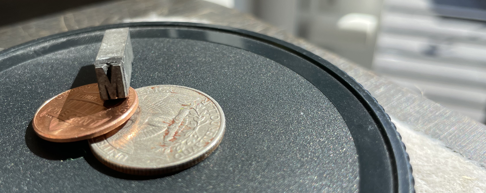
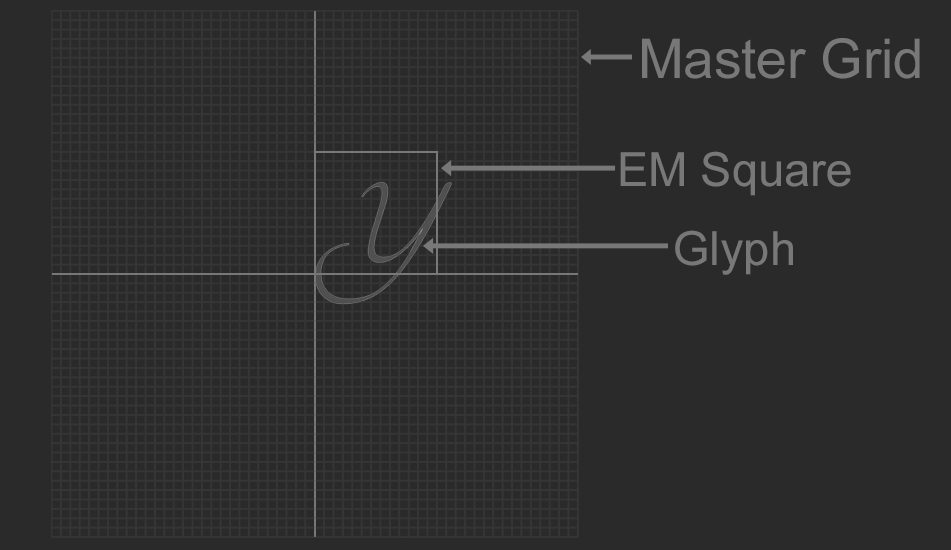

True Type Fonts
This blog explores how to parse and render true type font files. By the end of this blog you should be able to parse, layout, and render true type fonts. The final sample code for this blog is available here. These are some additional references for working with ttf files:
- Apple TrueType Reference Manual
- MSDN Open Type Specification
- An Introduction to TrueType Fonts
- Design with FontForge
- FreeType 2 Glyph Conventions
- Implementing a Font Reader and Rasterizer from Scratch, Part 1: TTF Font Reader.
A font contains a number of glyphs, and maps those glyphs to characters. Glyphs are the visual representation of a character, they are stored as vector data; a collection of lines and curves that is rasterized into pixels. Before we start parsing fonts, let's explore how a font is created and some useful terminology.
Fonts are created on an indivisible grid, there are no fractional coordinates. This glid is called the Master Grid. The origin of this grid is (0, 0), it has a range of -16384 to +16383. Each unit on the master grid is called a Font Unit, or FUnit. Font units are signed 16 bit integers (i16).
The metal squares used to typeset print are called sorts. The EM square is the size of the metal sort that the capital M was cast on.
In digital fonts, the EM square has taken on a new meaning. It now serves as the digital canvas that a glyph is drawn on, the EM square is the part of the master grid that glyphs are drawn in. A glyph can extend outside of the em square.
The size of the EM square relative to the size of a font unit determines the resolution that a glyph is designed at. The larger the EM square, the more pixels are available to design glyphs on, allowing for finer detail. Most fonts are designed with a grid size of 2048 funits per em.
Designers create vector shapes to represent glyphs. Each shape is defined by lines and curves. True Type Font files use quadratic bezier curves.
Two connected points form an edge. An edge can be straight or curved. A closed loop of edges makes a contour. One or more contours make a glyph. In the image below, the green dots are points on the curve and the red dots are control points. The tangents connecting curve points to control points are also visible.

Code
Let's define common data types.
typedef unsigned char u8; typedef char i8; typedef unsigned short u16; typedef short i16; typedef unsigned int u32; typedef int i32; typedef float f32;
At some point glyphs will need to be converted to vertices, let's make a Point struct for the verts. For conveniance, overload the addition, subtraction and multiplication (with a scalar) operators.
struct Point {
f32 x;
f32 y;
inline Point() : x(0.0f), y(0.0f) { }
inline Point(f32 _x, f32 _y) : x(_x), y(_y) { }
};
inline Point operator+(const Point& a, const Point& b) {
return Point(a.x + b.x, a.y + b.y);
}
inline Point operator*(const Point& a, f32 b) {
return Point(a.x * b, a.y * b);
}
inline Point operator-(const Point& a, const Point& b) {
return Point(a.x - b.x, a.y - b.y);
}
TTF files are stored with Big Endian byte order. Whenever an integer needs to be read, the byte order needs to be reversed. That's what code like this is doing:
u8* p; u32 a = (p[0] << 24) | (p[1] << 16) | (p[2] << 8) | p[3]; // Read big endian u32 p += 4; // move sizeof(u32); u16 b = (p[0] << 8) | p[1]; // Read big endian u16 p += 2; // move sizeof(u16)
You will find manual endian conversions like the above code snipped troughout the blog. To make reading / writing common data types easier, let's create helper functions to parse i16, u16, i32, u32, and f32.
static inline i16 read_i16(u8** data) {
i16 result = (i16)(((*data)[0] << 8) | (*data)[1]);
*data += 2;
return result;
}
static inline u16 read_u16(u8** data) {
u16 result = (u16)(((*data)[0] << 8) | (*data)[1]);
*data += 2;
return result;
}
static inline i32 read_i32(u8** data) {
i32 result = (i32)(((*data)[0] << 24) | ((*data)[1] << 16) | ((*data)[2] << 8) | (*data)[3]);
*data += 4;
return result;
}
static inline u32 read_u32(u8** data) {
u32 result = (u32)(((*data)[0] << 24) | ((*data)[1] << 16) | ((*data)[2] << 8) | (*data)[3]);
*data += 4;
return result;
}
static inline f32 read_fixed(u8** data) {
u16 result = (i16)(((*data)[0] << 8) | (*data)[1]);
*data += 2;
return f32(result) / 16384.0f;
}